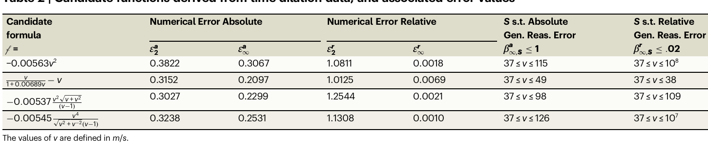

flowchart TD
A["SR 候補式<br/>（Table 2 の関数）"] --> B{"推論モジュール<br/>KeYmaera X で照合"}
R2["公理系 R<br/>（相対論的: 光速 = c 一定）"] --> B
R2p["公理系 R'<br/>（ニュートン的 R2': 光速 = √(v²+c²)）"] --> C{"推論モジュール<br/>で照合"}
A --> C
B -->|"よく整合する候補あり<br/>（β が小さい区間 S を保証）"| D["R が現象を説明する"]
C -->|"全候補で β > 1<br/>（データ領域上でさえ不整合）"| E["R' は棄却<br/>（時間遅延が生じない）"]
事例 II：相対論的時間遅延
事例 II：相対論的時間遅延
ノート原文（抜粋, English）
“Einstein’s theory of relativity postulates that the speed of light is constant, and implies that two observers in relative motion to each other will experience time differently and observe different clock frequencies. The frequency f for a clock moving at speed v is related to the frequency f_0 of a stationary clock by the formula [eq. (5)] … where c is the speed of light. This formula was recently confirmed experimentally by Chou et al. using high precision atomic clocks.” — Cornelio et al. 2023 (Cornelio, Dash, ほか 2023)
忠実な日本語訳：時間遅延の法則と定式化
アインシュタインの相対性理論は、光速が一定であると要請し、互いに相対運動する 2 人の観測者は時間を異なって経験し、異なるクロック周波数を観測することを含意する。速さ v で運動するクロックの周波数 f は、静止したクロックの周波数 f_0 と、次の式によって関係づけられる。
\frac{f - f_0}{f_0} = \sqrt{1 - \frac{v^2}{c^2}} - 1 , \tag{12.1}
ここで c は光速である。この式は最近、Chou ら (Chou ほか 2010) によって高精度原子時計を用いて実験的に確認された。我々は、Chou ら (Chou ほか 2010) が報告した実験データ——v の測定値と、それに対応する (f - f_0)/f_0 の値からなる——で本システムを検証する。このデータは補足情報に再掲してある。時間遅延の式を導出するための公理は、Behroozi (Behroozi 2014) と Smith (Smith 2011) の仕事から取った。これらも補足情報に挙げてあり、実験データには現れない変数を含む。
表 12.1 に、入力演算子の集合として \{+, -, \times, \div, \sqrt{\ }\} を用いて、本システムの記号回帰（SR）モジュールが得たいくつかの関数を、それらの数値誤差および汎化推論誤差とともに示す。

第 6 列は、第 1 列の関数の絶対汎化推論誤差が高々 1 であることを推論モジュールが検証できる v の区間として、集合 S を与える。最終列は、相対汎化推論誤差が高々 2% であることを検証できる v の区間を与える。最後の関数は、この指標の下では相対誤差が小さいにもかかわらず、もし真の関数が連続であると仮定するならば、合理的な候補から除外できる（v = 1 で特異性をもつ）。したがって、元の関数を得ることはできないものの、別の関数——非常に広い速度範囲にわたって優れた予測を与えるという意味で、よく汎化する関数——を我々は得る。この事例では、本システムは代替的な公理系を排除する助けにもなる。光速が一定値 c であるという公理を、光が他の力学的物体と同じように振る舞うという「ニュートン的（Newtonian）」仮定で置き換えることを考えよう。すなわち、物体の運動方向に垂直な方向へ、速度 v の物体から放たれた光は、速度 \sqrt{v^2 + c^2} をもつとする。補足情報の公理 R2 における c を \sqrt{v^2 + c^2} で置き換えて R2’ を得ると、（定理証明器によって確認される通り）自己無矛盾な公理系が得られるが、それは時間遅延が生じない系である。我々の推論モジュールは、表 12.1 のどの関数もこの更新された公理系とは整合しないと結論する。すなわち、絶対汎化推論誤差はデータ領域上でさえ 1 を超え、点ごとの推論誤差もそうである。その結果、データは、研究対象の現象に関連する公理系を弁別するために間接的に用いられる。SR は、正確な式のみを予想（conjecture）として提示するのである。
詳細授業：真の式は復元できなくても「最良の汎化」は選べる
ヒントこの節の主張を一言で
ケプラーの事例（距離の一般化：データ誤差 ε と理論誤差 β, 09 章）では真の式そのものを再発見できたが、時間遅延の事例はあえて「失敗例」を見せる章である。SR は 式 12.1 を一度も出力しなかった。それでもこの章には 2 つの重要なメッセージがある——(1) 真の式を復元できなくても、推論モジュールは「最もよく汎化する候補」を選び出せる、(2) データそのものが公理系の良し悪しを判定する材料になる。
なぜ真の式 式 12.1 は出てこないのか
Chou ら (Chou ほか 2010) のデータは、地上で実現できる速度——光速 c \approx 3.0 \times 10^8\,\text{m/s} に対してせいぜい数 m/s から数十 m/s——の範囲しかカバーしない。この範囲では v/c は 10^{-7} 程度の極端に小さい量であり、式 12.1 を Taylor 展開すると
\frac{f - f_0}{f_0} = \sqrt{1 - \frac{v^2}{c^2}} - 1 \approx -\frac{1}{2}\frac{v^2}{c^2} - \frac{1}{8}\frac{v^4}{c^4} - \cdots \tag{12.2}
となる。データ領域では第 1 項 -\tfrac{1}{2}v^2/c^2 \approx -0.00556\,v^2 が支配的で、高次項は測定誤差に完全に埋もれる。したがって、データだけを見れば「f は v^2 に比例して下がる」という二次関数が最も自然な当てはめになる。実際 表 12.1 の第 1 候補 -0.00563\,v^2 は、まさにこの先頭項を拾ったものである（係数 0.00563 は 1/(2c^2) に近い）。平方根の中身 1 - v^2/c^2 を「平方根として」復元するには、v が c に近づく領域のデータが必要だが、そんなデータは地上には存在しない。これが「データから真の式を復元できない」ことの直観である。
ノート用語の確認：汎化推論誤差と区間 S
- 点ごとの推論誤差（pointwise reasoning error）：各データ点 1 つ 1 つにおける、候補式と公理から導かれる真の振る舞いとのずれ。
- 汎化推論誤差（generalization reasoning error）：データ領域外まで含めた区間全体での最大ずれ。\beta^a_{\infty,S} は区間 S 上の絶対汎化推論誤差（L_\infty ノルム、すなわち最悪値）、\beta^r_{\infty,S} は同じく相対版を表す。
- 区間 S：推論モジュール（自動定理証明器 KeYmaera X と Mathematica）が「この区間に限れば誤差が閾値以下だと証明できる」と保証した v の範囲。S が広いほど、その候補式は遠くまで信頼できる＝よく汎化する。
候補式を「汎化の広さ」で読み比べる
表 12.1 の各候補は、データ上の数値誤差だけ見ればどれも似たり寄ったりである（絶対誤差 \varepsilon^a_2 は 0.30〜0.38 の範囲）。差がつくのは右側 2 列の区間 S である。論文値を読み解くと次のようになる。
| 候補式 f = | 絶対誤差 \varepsilon^a_2 | 絶対 \beta^a_{\infty,S}\le 1 の区間 S | 相対 \beta^r_{\infty,S}\le.02 の区間 S |
|---|---|---|---|
| -0.00563\,v^2 | 0.3822 | 37 \le v \le 115 | 37 \le v \le 10^8 |
| \dfrac{v}{1+0.00689\,v} - v | 0.3152 | 37 \le v \le 49 | 37 \le v \le 38 |
| -0.00537\,\dfrac{v^2\sqrt{v+v^2}}{(v-1)} | 0.3027 | 37 \le v \le 98 | 37 \le v \le 109 |
| -0.00545\,\dfrac{v^4}{\sqrt{v^2+v^{-2}}\,(v-1)} | 0.3238 | 37 \le v \le 126 | 37 \le v \le 10^7 |
ここで決定的なのは最終列の右端である。第 1 候補 -0.00563\,v^2 は相対誤差 2% 以内を v \le 10^8\,\text{m/s} まで保証できる——光速の 1/3 に達するほど遠くまで信頼できる。これは 式 12.2 の先頭項そのものだから当然で、真の式に最も近い候補がそのまま「最良の汎化」として浮かび上がる。一方、第 2 候補 \frac{v}{1+0.00689v}-v は v \le 38 までしか保証できず、データ領域をわずかに出ただけで破綻する。数値誤差ではほぼ同点だった候補たちが、汎化の広さでは桁違いに差がつく——これが推論モジュールの付加価値である。
連続性の仮定で特異な候補を棄却する
表 12.1 画像の最終行の候補 -0.00545\,\dfrac{v^4}{\sqrt{v^2+v^{-2}}\,(v-1)} は、相対誤差 2% を v \le 10^7 まで保証でき、見かけ上はよく汎化する。しかしこの式は v = 1 で分母が 0 になり、特異性（発散）をもつ。物理的なクロック周波数が特定の速度でいきなり無限大に飛ぶことはあり得ない。そこで「真の関数は連続であるべき」というモデラーの選好を 1 つ加えるだけで、この候補は合理的な候補から外れる。
重要教訓：仮説クラスは「数値当てはめ」だけでは絞れない
データへの当てはまり（数値誤差）と、遠方での信頼性（汎化推論誤差）と、形そのものへの先験的制約（連続性などのモデラーの選好）は、互いに独立な判定軸である。3 つを併用して初めて、無数の候補から物理的に妥当な 1 つへ絞り込める。AI-Descartes の核心は「データ＋論理＋選好」のこの三位一体にある。
データで公理系そのものを弁別する
この事例の最も面白い論点は最後にある。SR が出した候補はどれも「真の式」ではなかった。では推論モジュールは無力かというと逆で、どの公理系の下でデータを説明すべきかを判定する。
論文は思考実験として、特殊相対論の核心公理「光速は不変の定数 c である」を、ニュートン力学風の仮定で差し替える。すなわち「光も他の物体と同じく、運動する光源（速度 v）から運動方向に垂直に放たれると、速度 \sqrt{v^2 + c^2} をもつ」とする。形式的には、補足情報の公理 R2 中の c を \sqrt{v^2+c^2} に置換して R2’ を作る。
定理証明器で確認する限り、R2’ に差し替えた公理系それ自体は自己無矛盾である（論理的な破綻はない）。しかしこの系は時間遅延を全く生じない——\sqrt{v^2+c^2} という速度合成は、ちょうど時間の遅れを打ち消す向きに効くからである。結果として、推論モジュールは「表 12.1 のどの候補式も R2’ 系とは整合しない」と結論する。具体的には、絶対汎化推論誤差がデータ領域上でさえ 1 を超え、点ごとの推論誤差も同様に大きい。
これが意味することは深い。データは公理系を間接的に弁別する道具になる。相対論的公理系 R の下では「データによく合い、かつ広く汎化する」候補が存在したのに、ニュートン的公理系 R’ の下では「データ領域上ですべての候補が不整合」になる。したがって「R’ は現象に不適切な公理系だ」と論理的に結論できる。SR は正確な式だけを予想として提示し、その予想がどちらの理論の下で導出可能かを推論モジュールが照合する——この往復によって、データだけでは決められなかった「理論の選択」が可能になる。
コード解説：推論モジュールはどこで区間 S を出すか
公理と候補式の照合、および区間 S の算出は、Python の推論モジュール（reasoning/src/）が KeYmaera X と Mathematica を呼び出して行う。時間遅延の公理 R/R’ は data/ 配下に格納され、候補式（SR 出力）に対して点ごと・汎化の推論誤差を評価し、誤差が閾値以下となる v の区間を二分探索的に詰めることで 表 12.1 の第 6・7 列を生成する。ニュートン的公理系 R’ の評価は、同じ候補式集合に対して公理ファイルだけを R2 から R2’ へ差し替えて再実行する形になっており、コードの変更点は公理定義の 1 箇所のみで、候補式・データ・推論パイプラインは共通である点が、「データで公理系を弁別する」という主張を実装上も裏づけている（リポジトリ構成の詳細は調査ドキュメント参照 (Cornelio ほか 2023)）。
対話デモ：データ領域と汎化領域の見え方
下のデモは、横軸を速度 v、縦軸を (f-f_0)/f_0 として、真の式 式 12.1（\sqrt{1-v^2/c^2}-1）と 表 12.1 の代表候補 -0.00563\,v^2 を重ね描きする。スライダーで横軸の最大速度（対数スケールの指数）を動かすと、データ領域（〜10² m/s 程度）では両者が完全に重なって区別できないのに、v が c に近づくと真の式だけが平方根的に折れ曲がり、二次近似が破綻していく様子が見える。これが「狭いデータ領域では真の式と近似式を弁別できない／広い領域で初めて差がつく」という本章の主張の可視化である。
ヒントデモの読み方
- スライダーを左端（v_{\max}\sim 10^2）に置くと、青（真の式）と赤破線（二次候補）は重なって 1 本にしか見えない。右下の「最大|真-候補|」もほぼ 0。これが Chou ら (Chou ほか 2010) のデータ領域の状況で、SR が二次式を出すのは当然だと分かる。
- スライダーを右（v_{\max}\to 10^8 \approx c/3）へ動かすと、真の式だけが下に折れ曲がり、二次近似との差が開く。広い速度範囲で初めて両者を弁別できる——だが地上のデータはそこまで届かない。
- 区間 S（37〜115 m/s）のハイライトが、推論モジュールが「絶対誤差 1 以下」を保証した範囲。候補が真の式とほぼ一致しているこの帯の中では、データだけからの弁別は原理的に不可能である。
よくある質問（FAQ）
学部生がつまずきやすい点を Q&A 形式で補足します。
Q1. そもそも「公理(axiom)」とか「定理証明器(KeYmaera X)で照合する」って具体的に何をやっているんですか？データに式を当てはめるなら回帰だけで済む気がして、なぜ論理の証明が必要なのか分かりません。
ここでは 2 つの別々の道具が連携しています。記号回帰(SR)は「データ点に最もよく合う数式の形」を探す係です(例: 表 12.1 の -0.00563\,v^2 を見つける)。一方公理とは、相対性理論の出発点となる前提命題(「光速は不変の定数 c である」など、本章の R2)のことで、定理証明器(KeYmaera X)は「その公理から候補式が論理的に導けるか／どれだけずれるか」を数学的に証明する係です。
たとえるなら、回帰は「点を結ぶ曲線を鉛筆で描く人」、定理証明器は「その曲線が物理法則という前提と矛盾しないか論理的に検算する数学者」です。回帰だけだと「データには合うが物理的に意味不明な式」も同点で残ってしまうので、式 12.1 を生む前提(公理)から本当に導けるかを論理で確かめる工程が要るのです。
Q2. 候補式に v=1 で発散する項 (v-1) があると棄却されますが、データは 37〜115 m/s なのに、なぜ範囲外の v=1 での発散を問題にするんですか？使う範囲で誤差が小さければ良いのでは？
鋭い疑問ですが、本章の核心は「判定軸が独立に 3 つある」ことです(連続性の仮定で特異な候補を棄却する)。
- 数値誤差: データ点への当てはまりの良さ(表の \varepsilon^a_2)。これだけなら確かに範囲内が良ければ十分。
- 汎化推論誤差: データの外まで含めた信頼性。
- 連続性という先験的選好: 「物理的なクロック周波数が、ある速度でいきなり無限大に飛ぶことはあり得ない」という、形そのものへの事前の好み。
v=1 での発散が問題なのは数値誤差の話ではなく、3 番目の選好に反するからです。本物の物理量が連続なら、たとえ使う範囲の外であっても「途中で無限大に飛ぶ関数」は真の式の候補としてふさわしくない、と判断できる。だから -0.00545\,\dfrac{v^4}{\sqrt{v^2+v^{-2}}\,(v-1)} は範囲内の誤差が小さくても棄却されます。
Q3. 区間 S が 10^8 m/s まで保証できると「よく汎化する」と言いますが、データは 100 m/s くらいまでしかないのに、どうやってデータの無い遠方で誤差が小さいと『証明』できるんですか？外挿はあてにならないと習った気がします。
ここが一番の勘所です。区間 S はデータの統計から出しているのではなく、公理(物理法則)からの論理的保証です(候補式を「汎化の広さ」で読み比べる の用語確認)。
普通の外挿は「データの傾向をそのまま遠くへ伸ばす」ので危険ですが、ここでやっているのは違います。推論モジュールは、相対論の公理から導かれる「真の振る舞い」と候補式を区間全体で式同士として比較し、その最大ずれ(L_\infty ノルム、つまり最悪値 \beta^a_{\infty,S})が閾値以下になる v の範囲を定理証明器で証明します。
たとえるなら、点をいくつか測って線を伸ばすのではなく、「設計図(公理)と部品(候補式)を突き合わせて、この区間ではズレが必ず 1 mm 以内だと数学的に証明する」イメージです。だから -0.00563\,v^2 は 式 12.2 の先頭項そのものなので、v\le 10^8 まで真の式とのズレが小さいことを保証できる。データの無い遠方でも、データではなく論理が保証しているので「危険な外挿」とは別物なのです。
Q4. ニュートン的な公理 R’(光速を \sqrt{v^2+c^2} にする)は『自己無矛盾だが時間遅延が生じない』とありますが、無矛盾なのにデータと合わない、というのがピンときません。無矛盾なら正しいんじゃないんですか？
「無矛盾(自己無矛盾)」と「現実に合う」は全く別の話です(データで公理系そのものを弁別する)。無矛盾とは「その前提の集まりの中に論理的な食い違いが無い」というだけで、定理証明器はそれを確認します。しかし、論理的に破綻していない前提でも、現実の世界がそうなっているとは限りません。
例えば「すべての白鳥は黒い」という公理から出発しても、内部に論理矛盾はないので無矛盾な体系は作れます。でも実際の白鳥を見れば白い——つまり現実と合わない。R’ も同じで、光速を \sqrt{v^2+c^2} とする速度合成はちょうど時間の遅れを打ち消す向きに効くため、論理的には破綻していないのに時間遅延が全く生じない世界になります。
そこでデータが効きます。R の下では「データによく合い広く汎化する候補」が存在したのに、R’ の下では 表 12.1 のどの候補もデータ領域上でさえ絶対汎化推論誤差が 1 を超える。だから「無矛盾だが現実(データ)と合わない R’ は、この現象に不適切な公理系だ」と論理的に結論できる——これが「データが間接的に公理系(理論)を選ぶ」という本章の主張の意義です。
Behroozi, Feredoon. 2014. 「A simple derivation of time dilation and length contraction in special relativity」. The Physics Teacher 52: 410–12.
Chou, C. W., D. B. Hume, T. Rosenband, と D. J. Wineland. 2010. 「Optical clocks and relativity」. Science 329: 1630–32.
Cornelio, Cristina ほか. 2023. 「AI-Descartes GitHub repository: Combining data and theory for derivable scientific discovery」. https://github.com/IBM/AI-Descartes.
Cornelio, Cristina, Sanjeeb Dash, Vernon Austel, Tyler R. Josephson, Joao Goncalves, Kenneth L. Clarkson, Nimrod Megiddo, Bachir El Khadir, と Lior Horesh. 2023. 「Combining data and theory for derivable scientific discovery with AI-Descartes」. Nature Communications 14 (1): 1777. https://doi.org/10.1038/s41467-023-37236-y.
Smith, Glenn S. 2011. 「A simple electromagnetic model for the light clock of special relativity」. European Journal of Physics 32: 1585–95.